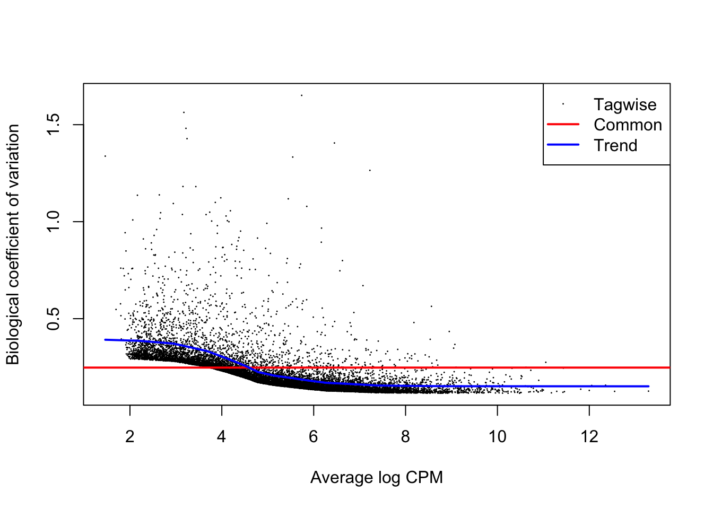

Untitled
Benjamin Fair
January 14, 2020
Last updated: 2020-01-14
Checks: 6 1
Knit directory: rna-seq-dhx38/analysis/
This reproducible R Markdown analysis was created with workflowr (version 1.5.0). The Checks tab describes the reproducibility checks that were applied when the results were created. The Past versions tab lists the development history.
The R Markdown is untracked by Git. To know which version of the R Markdown file created these results, you’ll want to first commit it to the Git repo. If you’re still working on the analysis, you can ignore this warning. When you’re finished, you can run wflow_publish to commit the R Markdown file and build the HTML.
Great job! The global environment was empty. Objects defined in the global environment can affect the analysis in your R Markdown file in unknown ways. For reproduciblity it’s best to always run the code in an empty environment.
The command set.seed(20191126) was run prior to running the code in the R Markdown file. Setting a seed ensures that any results that rely on randomness, e.g. subsampling or permutations, are reproducible.
Great job! Recording the operating system, R version, and package versions is critical for reproducibility.
Nice! There were no cached chunks for this analysis, so you can be confident that you successfully produced the results during this run.
Great job! Using relative paths to the files within your workflowr project makes it easier to run your code on other machines.
Great! You are using Git for version control. Tracking code development and connecting the code version to the results is critical for reproducibility. The version displayed above was the version of the Git repository at the time these results were generated.
Note that you need to be careful to ensure that all relevant files for the analysis have been committed to Git prior to generating the results (you can use wflow_publish or wflow_git_commit). workflowr only checks the R Markdown file, but you know if there are other scripts or data files that it depends on. Below is the status of the Git repository when the results were generated:
Ignored files:
Ignored: .Rhistory
Ignored: .Rproj.user/
Untracked files:
Untracked: analysis/20200110_DiffExpression_MoreReplicates.Rmd
Untracked: output/GeneExpression.DE.WithMoreReplicates.tab
Untracked: output/GeneExpression.gsea.WithMoreReplicates.tab
Unstaged changes:
Modified: analysis/20190105_DifferentialSplicingMoreReplicates.Rmd
Modified: analysis/20191203_DiffExpression.Rmd
Modified: output/GeneExpression.DE.tab
Modified: output/GeneExpression.gsea.tab
Note that any generated files, e.g. HTML, png, CSS, etc., are not included in this status report because it is ok for generated content to have uncommitted changes.
There are no past versions. Publish this analysis with wflow_publish() to start tracking its development.
Introduction
I previously did a differential splicing analysis with 3 replicates of affected and 3 replicates of unrelated healthy. Now we have more healthy datasets of other unrelated individuals for more robust analysis to identify effects that might be unqiue to the DHX38 mutations.
Analysis
Raw RNA-seq data has been aligned and collapsed into gene count table (rows of genes, columns of samples, each cell is exonic read counts) using code in code section of this repo, creating a count matrix in output. Here I will process that data with edgeR approach that I have used previously. The combined samples are simply biological replicates combined. Since there are multiple levels of replication, I think a reasonable way to do this analysis is to just combine the bioligical replicates and do a 1 affected vs 3 healthy analysis.
First, load necessary libraries
library(tidyverse)
library(knitr)
library(edgeR)
library(corrplot)
library(gplots)
library(biomaRt)
library(ggrepel)
library("clusterProfiler")
library("org.Hs.eg.db")
library(enrichplot)And read in the count table
CountTable <- read.table('../output/GeneExpressionCountTable.subread.txt.gz', header=T, check.names=FALSE, skip=1)
CountTable.matrix <- CountTable %>%
dplyr::select(-c("Chr", "Start", "End", "Strand", "Length")) %>%
column_to_rownames("Geneid") %>% as.matrix()
#Preview table
kable(CountTable.matrix[1:10,])| Healthy.JG_3 | Healthy.BIH4_1 | Healthy_1 | Healthy_3 | Combined.BIH4 | Affected_2 | Affected_1 | Combined.XM001 | Healthy_2 | Healthy.JG_2 | Healthy.BIH4_2 | Combined.JG | Combined.DHX | Healthy.JG_1 | Affected_3 | |
|---|---|---|---|---|---|---|---|---|---|---|---|---|---|---|---|
| ENSG00000223972 | 2 | 0 | 0 | 1 | 1 | 1 | 2 | 4 | 3 | 2 | 1 | 8 | 3 | 4 | 0 |
| ENSG00000227232 | 30 | 36 | 30 | 38 | 83 | 53 | 43 | 94 | 26 | 48 | 47 | 122 | 130 | 44 | 34 |
| ENSG00000278267 | 16 | 12 | 14 | 18 | 25 | 12 | 13 | 41 | 9 | 11 | 13 | 46 | 36 | 19 | 11 |
| ENSG00000243485 | 0 | 0 | 0 | 0 | 2 | 2 | 0 | 0 | 0 | 1 | 2 | 2 | 2 | 1 | 0 |
| ENSG00000284332 | 0 | 0 | 0 | 0 | 0 | 0 | 0 | 0 | 0 | 0 | 0 | 0 | 0 | 0 | 0 |
| ENSG00000237613 | 0 | 0 | 0 | 0 | 0 | 0 | 0 | 0 | 0 | 0 | 0 | 0 | 0 | 0 | 0 |
| ENSG00000268020 | 0 | 0 | 0 | 0 | 0 | 0 | 0 | 0 | 0 | 0 | 0 | 0 | 0 | 0 | 0 |
| ENSG00000240361 | 0 | 0 | 0 | 0 | 0 | 0 | 0 | 0 | 0 | 0 | 0 | 0 | 0 | 0 | 0 |
| ENSG00000186092 | 0 | 0 | 0 | 0 | 0 | 0 | 0 | 0 | 0 | 0 | 0 | 0 | 0 | 0 | 0 |
| ENSG00000238009 | 0 | 0 | 0 | 0 | 0 | 0 | 0 | 0 | 0 | 0 | 0 | 0 | 2 | 0 | 2 |
Plot total exonic gene counts per sample
CountTable.matrix %>% colSums() %>% as.data.frame() %>%
rownames_to_column("Sample") %>%
ggplot(aes(x=Sample, y=./1000000)) +
geom_col() +
ylab("Exonic read count (Millions)") +
theme_bw() +
theme(axis.text.x = element_text(angle = 45, hjust = 1))As expected, the combined samples are the sum of the replicates.
Check correlations between samples
# CountTable to CountsPerMillion
cpm <- cpm(CountTable.matrix, log=TRUE, prior.count=0.5)
kable(cpm[1:10,])| Healthy.JG_3 | Healthy.BIH4_1 | Healthy_1 | Healthy_3 | Combined.BIH4 | Affected_2 | Affected_1 | Combined.XM001 | Healthy_2 | Healthy.JG_2 | Healthy.BIH4_2 | Combined.JG | Combined.DHX | Healthy.JG_1 | Affected_3 | |
|---|---|---|---|---|---|---|---|---|---|---|---|---|---|---|---|
| ENSG00000223972 | -2.8591246 | -6.0520744 | -6.0520744 | -4.0596960 | -4.6647839 | -4.4585544 | -3.6083115 | -3.6296760 | -2.6537340 | -3.0569103 | -4.1261628 | -2.6661101 | -4.3768956 | -2.2712367 | -6.0520744 |
| ENSG00000227232 | 0.8924541 | 1.0623718 | 0.7712198 | 0.7833333 | 1.0259928 | 0.7020906 | 0.5399739 | 0.6410562 | 0.3353232 | 1.3433098 | 0.9987444 | 1.1295392 | 0.5337226 | 1.0894737 | 0.2990411 |
| ENSG00000278267 | -0.0042239 | -0.5019166 | -0.3138292 | -0.2807002 | -0.6806292 | -1.3959114 | -1.1517472 | -0.5380690 | -1.1630010 | -0.7536815 | -0.8272240 | -0.2613098 | -1.2800265 | -0.1086483 | -1.2925038 |
| ENSG00000243485 | -6.0520744 | -6.0520744 | -6.0520744 | -6.0520744 | -3.9708238 | -3.7198834 | -6.0520744 | -6.0520744 | -6.0520744 | -3.8864472 | -3.3297094 | -4.3021258 | -4.7520134 | -3.9864137 | -6.0520744 |
| ENSG00000284332 | -6.0520744 | -6.0520744 | -6.0520744 | -6.0520744 | -6.0520744 | -6.0520744 | -6.0520744 | -6.0520744 | -6.0520744 | -6.0520744 | -6.0520744 | -6.0520744 | -6.0520744 | -6.0520744 | -6.0520744 |
| ENSG00000237613 | -6.0520744 | -6.0520744 | -6.0520744 | -6.0520744 | -6.0520744 | -6.0520744 | -6.0520744 | -6.0520744 | -6.0520744 | -6.0520744 | -6.0520744 | -6.0520744 | -6.0520744 | -6.0520744 | -6.0520744 |
| ENSG00000268020 | -6.0520744 | -6.0520744 | -6.0520744 | -6.0520744 | -6.0520744 | -6.0520744 | -6.0520744 | -6.0520744 | -6.0520744 | -6.0520744 | -6.0520744 | -6.0520744 | -6.0520744 | -6.0520744 | -6.0520744 |
| ENSG00000240361 | -6.0520744 | -6.0520744 | -6.0520744 | -6.0520744 | -6.0520744 | -6.0520744 | -6.0520744 | -6.0520744 | -6.0520744 | -6.0520744 | -6.0520744 | -6.0520744 | -6.0520744 | -6.0520744 | -6.0520744 |
| ENSG00000186092 | -6.0520744 | -6.0520744 | -6.0520744 | -6.0520744 | -6.0520744 | -6.0520744 | -6.0520744 | -6.0520744 | -6.0520744 | -6.0520744 | -6.0520744 | -6.0520744 | -6.0520744 | -6.0520744 | -6.0520744 |
| ENSG00000238009 | -6.0520744 | -6.0520744 | -6.0520744 | -6.0520744 | -6.0520744 | -6.0520744 | -6.0520744 | -6.0520744 | -6.0520744 | -6.0520744 | -6.0520744 | -6.0520744 | -4.7520134 | -6.0520744 | -3.5302110 |
#plot cpm
median_log2_cpm <- apply(cpm, 1, median)
hist(median_log2_cpm)
# check correlations between samples
CorMat <- cor(cpm)
kable(CorMat)| Healthy.JG_3 | Healthy.BIH4_1 | Healthy_1 | Healthy_3 | Combined.BIH4 | Affected_2 | Affected_1 | Combined.XM001 | Healthy_2 | Healthy.JG_2 | Healthy.BIH4_2 | Combined.JG | Combined.DHX | Healthy.JG_1 | Affected_3 | |
|---|---|---|---|---|---|---|---|---|---|---|---|---|---|---|---|
| Healthy.JG_3 | 1.0000000 | 0.9547294 | 0.9551455 | 0.9412465 | 0.9617618 | 0.9463351 | 0.9450591 | 0.9624578 | 0.9448417 | 0.9557623 | 0.9527712 | 0.9814294 | 0.9586613 | 0.9610586 | 0.9534496 |
| Healthy.BIH4_1 | 0.9547294 | 1.0000000 | 0.9539969 | 0.9422676 | 0.9872051 | 0.9493463 | 0.9476235 | 0.9623758 | 0.9456483 | 0.9510469 | 0.9588224 | 0.9636047 | 0.9614223 | 0.9548696 | 0.9560137 |
| Healthy_1 | 0.9551455 | 0.9539969 | 1.0000000 | 0.9524657 | 0.9596554 | 0.9443687 | 0.9438560 | 0.9870490 | 0.9562035 | 0.9470934 | 0.9506989 | 0.9611764 | 0.9555638 | 0.9545264 | 0.9495342 |
| Healthy_3 | 0.9412465 | 0.9422676 | 0.9524657 | 1.0000000 | 0.9512527 | 0.9554088 | 0.9549189 | 0.9807831 | 0.9700262 | 0.9375445 | 0.9499229 | 0.9465928 | 0.9560525 | 0.9414062 | 0.9413015 |
| Combined.BIH4 | 0.9617618 | 0.9872051 | 0.9596554 | 0.9512527 | 1.0000000 | 0.9634273 | 0.9620600 | 0.9702293 | 0.9541399 | 0.9626313 | 0.9884341 | 0.9744784 | 0.9748043 | 0.9652938 | 0.9672163 |
| Affected_2 | 0.9463351 | 0.9493463 | 0.9443687 | 0.9554088 | 0.9634273 | 1.0000000 | 0.9768898 | 0.9620928 | 0.9552610 | 0.9531728 | 0.9629860 | 0.9602197 | 0.9883522 | 0.9537794 | 0.9675438 |
| Affected_1 | 0.9450591 | 0.9476235 | 0.9438560 | 0.9549189 | 0.9620600 | 0.9768898 | 1.0000000 | 0.9613420 | 0.9544294 | 0.9519131 | 0.9620527 | 0.9589687 | 0.9871373 | 0.9528822 | 0.9664420 |
| Combined.XM001 | 0.9624578 | 0.9623758 | 0.9870490 | 0.9807831 | 0.9702293 | 0.9620928 | 0.9613420 | 1.0000000 | 0.9835078 | 0.9565234 | 0.9637110 | 0.9694140 | 0.9697808 | 0.9624151 | 0.9597859 |
| Healthy_2 | 0.9448417 | 0.9456483 | 0.9562035 | 0.9700262 | 0.9541399 | 0.9552610 | 0.9544294 | 0.9835078 | 1.0000000 | 0.9408971 | 0.9513490 | 0.9504304 | 0.9575416 | 0.9450088 | 0.9443274 |
| Healthy.JG_2 | 0.9557623 | 0.9510469 | 0.9470934 | 0.9375445 | 0.9626313 | 0.9531728 | 0.9519131 | 0.9565234 | 0.9408971 | 1.0000000 | 0.9568884 | 0.9838795 | 0.9650818 | 0.9630776 | 0.9590722 |
| Healthy.BIH4_2 | 0.9527712 | 0.9588224 | 0.9506989 | 0.9499229 | 0.9884341 | 0.9629860 | 0.9620527 | 0.9637110 | 0.9513490 | 0.9568884 | 1.0000000 | 0.9658420 | 0.9707951 | 0.9582526 | 0.9607596 |
| Combined.JG | 0.9814294 | 0.9636047 | 0.9611764 | 0.9465928 | 0.9744784 | 0.9602197 | 0.9589687 | 0.9694140 | 0.9504304 | 0.9838795 | 0.9658420 | 1.0000000 | 0.9740497 | 0.9872414 | 0.9680140 |
| Combined.DHX | 0.9586613 | 0.9614223 | 0.9555638 | 0.9560525 | 0.9748043 | 0.9883522 | 0.9871373 | 0.9697808 | 0.9575416 | 0.9650818 | 0.9707951 | 0.9740497 | 1.0000000 | 0.9657162 | 0.9902138 |
| Healthy.JG_1 | 0.9610586 | 0.9548696 | 0.9545264 | 0.9414062 | 0.9652938 | 0.9537794 | 0.9528822 | 0.9624151 | 0.9450088 | 0.9630776 | 0.9582526 | 0.9872414 | 0.9657162 | 1.0000000 | 0.9589588 |
| Affected_3 | 0.9534496 | 0.9560137 | 0.9495342 | 0.9413015 | 0.9672163 | 0.9675438 | 0.9664420 | 0.9597859 | 0.9443274 | 0.9590722 | 0.9607596 | 0.9680140 | 0.9902138 | 0.9589588 | 1.0000000 |
# Plot
heatmap.2(CorMat, trace="none")Ok, as expected. Biological replicates from same line cluster together. From here on forth I will deal with just the combined samples.
#Subset the combined samples
CountTable.matrix <- CountTable.matrix[, grep("Combined*", colnames(CountTable.matrix))]
dim(CountTable.matrix)[1] 58676 4And do the same filtering as before, filtering out genes below a threshold for cpm expression…
# Pick a cutoff for lowly expressed genes to exclude
hist(median_log2_cpm)
expr_cutoff <- 2
abline(v = expr_cutoff, col = "red", lwd = 3)#How many genes pass this threshold
sum(median_log2_cpm > expr_cutoff)[1] 11978CountTable.matrix.filtered <- CountTable.matrix[median_log2_cpm > expr_cutoff, ]
# Recalculate cpm from filtered count table
cpm <- cpm(CountTable.matrix.filtered, log=TRUE, prior.count=0.5)
# look at correlations from filtered cpm matrix
cor(cpm) %>%
heatmap.2(., trace="none", cexRow=1, cexCol=1)# Also look at similarity with MDS plot
plotMDS(cpm)Interestingly, samples do not primarily segregate by condition (healthy vs affected). In other words, biological noise (effects not due to the healthy vs affected contrast of interest) are greater than the healthy vs affected. I wil still do the differential expression analysis as planned, since it will yield a list of DE genes that are more likely truly due to the DHX38 mutations, but nonetheless it is likely that a large fraction of the DE genes we find will be due to effects not due to the DHX38 genotype but rather other line-specific effects, since these other line-specific effects have a generally stronger effect. In other words, the hypothesized effect of DHX38 mutations are quite small.
Now start prepping data for differential expression analysis
colnames(CountTable.matrix.filtered)[1] "Combined.BIH4" "Combined.XM001" "Combined.JG" "Combined.DHX" # A for affected, H for healthy
group <- c("H", "H", "H", "A")
# y is a DGELIst object contains count table and other metadata
y <- DGEList(counts = CountTable.matrix.filtered, group = group)
# calculate normalization factors using default TMM method which more accurately scales samples with different library sizes, for example while considering that highly expressed genes between conditions can have undesired effects if just using simple CountsPerMillion normalization.
y <- calcNormFactors(y)
y$samples %>% kable()| group | lib.size | norm.factors | |
|---|---|---|---|
| Combined.BIH4 | H | 40494235 | 1.0134834 |
| Combined.XM001 | H | 60272758 | 0.9668125 |
| Combined.JG | H | 55267740 | 1.0171157 |
| Combined.DHX | A | 89524716 | 1.0033922 |
Now estimate common, trended, and tagwise dispersion, and test for differential expression
#estimate dispersion, common, trended, and tag-wise (a combination of gene-specific dispersion and trend)
y <- estimateDisp(y)Design matrix not provided. Switch to the classic mode.sqrt(y$common.dispersion) # biological coefficient of variation[1] 0.2478897#Plot dispersions
plotBCV(y)
# by default, the tagwise dispersion is used for DE testing.
# Perform testing
et <- exactTest(y, pair=c("H","A"))
results_edgeR <- topTags(et, n = nrow(CountTable.matrix.filtered), sort.by = "none")
head(results_edgeR$table) %>% kable()| logFC | logCPM | PValue | FDR | |
|---|---|---|---|---|
| ENSG00000279457 | 0.0008339 | 2.323825 | 1.0000000 | 1 |
| ENSG00000248527 | -0.6449759 | 2.974398 | 0.5288493 | 1 |
| ENSG00000228794 | -0.1405206 | 3.373410 | 0.8252138 | 1 |
| ENSG00000230699 | 0.3685152 | 2.468252 | 0.5953829 | 1 |
| ENSG00000188976 | -0.0582193 | 6.968201 | 0.8141212 | 1 |
| ENSG00000187961 | -0.2584633 | 4.302562 | 0.5637095 | 1 |
#histogram of nominal P-vals
hist(results_edgeR$table$PValue)# how many genes below FDR threshold
sum(results_edgeR$table$FDR < .1)[1] 187#MA plot showing FDR<0.1
plotSmear(et, de.tags = rownames(results_edgeR)[results_edgeR$table$FDR < .01])
abline(h = c(-2, 2), col = "blue")Ok we did differential testing. But are the significant P-values still just due to technical factors that would be present in any 1v3 contrast of genetically independent cell lines? Let’s try the permutations of the sample labels to see if there is inflation of small P-values in the real contrast compared to the permutated contrasts (For example, the 1v3 comparison of [BIH4] vs [DHX39, XM001, JG])?
DiffExpTest <- function(groups){
Results <- DGEList(counts = CountTable.matrix.filtered, group = groups) %>%
estimateDisp() %>%
exactTest(pair=c("H", "A"))
return(Results$table$PValue)
}
RealResults <- DiffExpTest(groups=c("H", "H", "H", "A"))Design matrix not provided. Switch to the classic mode.Permutation1Results <- DiffExpTest(groups=c("A", "H", "H", "H"))Design matrix not provided. Switch to the classic mode.Permutation2Results <- DiffExpTest(groups=c("H", "A", "H", "H"))Design matrix not provided. Switch to the classic mode.Permutation3Results <- DiffExpTest(groups=c("H", "H", "A", "H"))Design matrix not provided. Switch to the classic mode.data.frame(RealResults, Permutation1Results, Permutation2Results, Permutation3Results) %>% gather(value="Actual.P") %>%
group_by(key) %>%
mutate(Expected.P=percent_rank(Actual.P)) %>%
ungroup() %>%
ggplot(aes(color=key, x=-log10(Expected.P), y=-log10(Actual.P))) +
geom_point() +
geom_abline() +
scale_color_manual(labels = c(Permutation1Results="Permuted; [BIH4] v [DHX, XM001, JG]",
Permutation2Results="Permuted; [XM001] v [DHX, BIH4, JG]",
Permutation3Results="Permuted; [JG] v [DHX, XM001, BIH4]",
RealResults="Actual; [DHX] v [BIH4, XM001, JG]"),
values=c("red", "blue", "purple", "black")) +
theme_bw()Ok, as I suggested before, the possible biological effect of DHX38 mutations is relatively small, compared to inter-line variation between non-DHX38 mutant samples. For example, the [XM001] v [DHX, BIH4, JG] comparison has more inflated P-values. So most of the significant changes we see are still likely due to non-DHX38 related things.
In any case, let’s still explore the results from the original contrast.
First add common gene names to the results table
#Use biomart to get common gene names and ensembl IDs
human_mart <- useMart("ensembl", dataset="hsapiens_gene_ensembl")
MyBioMartQuery <- getBM(attributes = c("ensembl_gene_id","external_gene_name", "description"), mart=human_mart, filters="ensembl_gene_id", values=rownames(results_edgeR))
results.more.descriptive <- results_edgeR$table %>%
rownames_to_column("ensembl_gene_id") %>%
left_join(MyBioMartQuery, by="ensembl_gene_id")
head(results.more.descriptive) %>% kable()| ensembl_gene_id | logFC | logCPM | PValue | FDR | external_gene_name | description |
|---|---|---|---|---|---|---|
| ENSG00000279457 | 0.0008339 | 2.323825 | 1.0000000 | 1 | WASH9P | WAS protein family homolog 9, pseudogene [Source:HGNC Symbol;Acc:HGNC:53981] |
| ENSG00000248527 | -0.6449759 | 2.974398 | 0.5288493 | 1 | MTATP6P1 | MT-ATP6 pseudogene 1 [Source:HGNC Symbol;Acc:HGNC:44575] |
| ENSG00000228794 | -0.1405206 | 3.373410 | 0.8252138 | 1 | LINC01128 | long intergenic non-protein coding RNA 1128 [Source:HGNC Symbol;Acc:HGNC:49377] |
| ENSG00000230699 | 0.3685152 | 2.468252 | 0.5953829 | 1 | AL645608.2 | novel transcript |
| ENSG00000188976 | -0.0582193 | 6.968201 | 0.8141212 | 1 | NOC2L | NOC2 like nucleolar associated transcriptional repressor [Source:HGNC Symbol;Acc:HGNC:24517] |
| ENSG00000187961 | -0.2584633 | 4.302562 | 0.5637095 | 1 | KLHL17 | kelch like family member 17 [Source:HGNC Symbol;Acc:HGNC:24023] |
#Check if DHX38 is differentially expressed
DHX38.results <- results.more.descriptive %>%
filter(external_gene_name=="DHX38")
kable(DHX38.results)| ensembl_gene_id | logFC | logCPM | PValue | FDR | external_gene_name | description |
|---|---|---|---|---|---|---|
| ENSG00000140829 | 0.0673342 | 6.889669 | 0.7861621 | 1 | DHX38 | DEAH-box helicase 38 [Source:HGNC Symbol;Acc:HGNC:17211] |
#Plot smear with DHX label
PlotSmear <- results.more.descriptive %>%
mutate(
Significance=case_when(
FDR<0.1 ~ "FDR<0.1",
FDR>0.1 ~ "Not significant",
external_gene_name=="DHX38" ~ "DHX38"),
Label=case_when(
external_gene_name=="DHX38" ~ paste0("DHX38\nP=", signif(DHX38.results$PValue, 3)),
!external_gene_name=="DHX38" ~ ""),
) %>%
arrange(desc(FDR))
DHX38.results <- PlotSmear %>%
filter(external_gene_name=="DHX38")
ggplot(PlotSmear, aes(x=logCPM, y=logFC, color=Significance, label=Label)) +
geom_point() +
geom_point(data=DHX38.results, color="black", show.legend = F) +
geom_text_repel(data=DHX38.results, color="black", show.legend = F) +
geom_hline(yintercept = 0, linetype="dashed") +
theme_bw() +
theme(legend.title = element_blank())Ok good. DHX38 is not differentially expressed. So if the alleles have some affect on splicing through DHX38, is not likely through modulating expression of DHX38 levels, but rather altering function.
Let’s make some plots to get to know significance testing results a little bit more… Keep in mind we don’t know much about the types of replicates these are (technical, versus biological split before differentiation, split after differentiation, etc), and that all these are from a single healthy and a single affected patient.
Volcano plot:
results.more.descriptive %>%
mutate(Significance=FDR<0.1) %>%
ggplot(aes(x=logFC, y=-log10(PValue), color=Significance)) +
geom_point(alpha=0.2) +
theme_bw()Plot of original results of a significant gene. Useful to check polarization of the logFC values (I think I set up the exactTest function to be such that positive logFC means more highly expressed in affected, but let’s double check that)
Top5DE_Genes <- results.more.descriptive %>%
arrange(FDR) %>% head(5) %>%
pull(ensembl_gene_id)
results.more.descriptive %>%
filter(ensembl_gene_id %in% Top5DE_Genes) %>%
dplyr::select(ensembl_gene_id, external_gene_name, logFC) %>%
kable()| ensembl_gene_id | external_gene_name | logFC |
|---|---|---|
| ENSG00000123562 | MORF4L2 | 1.289187 |
| ENSG00000148841 | ITPRIP | 2.426031 |
| ENSG00000237550 | AC243919.1 | -4.985699 |
| ENSG00000215030 | RPL13P12 | 3.646536 |
| ENSG00000132872 | SYT4 | 1.850729 |
cpm[Top5DE_Genes,] %>%
as.data.frame() %>%
rownames_to_column("ensembl_gene_id") %>%
gather(key="sample", value="log2cpm", -ensembl_gene_id) %>%
ggplot(aes(x=sample, y=log2cpm)) +
geom_col() +
facet_wrap(~ensembl_gene_id) +
theme_bw() +
theme(axis.text.x = element_text(angle = 45, hjust = 1))Ok correct, positive FC means higher expressed in affected samples. Now let’s do gene set enrichment analysis (GSEA) to see which types of gene categories are enriched for differentially expressed genes. For this we need an ordered list of genes. We could use absolute value of log-fold change, or maybe -log10(Pvalue). Judging from the volcano plot I’d guess the results would be virtually identical either way
#had to add very small number to Pvalue because very significant genes have Pvalues that are 0
gsea.results <- results.more.descriptive %>%
mutate(RankingMetric = -log10(PValue+1E-300)) %>%
arrange(desc(RankingMetric)) %>%
dplyr::select(ensembl_gene_id, RankingMetric) %>%
deframe() %>%
gseGO(ont="ALL", OrgDb=org.Hs.eg.db, keyType='ENSEMBL', nPerm=500000)Now let’s explore the GSEA results
gsea.results.df <- as.data.frame(gsea.results)
gsea.results.df %>%
group_by(ONTOLOGY) %>%
filter(rank(p.adjust, ties.method="first")<=8) %>%
ggplot(aes(x=enrichmentScore, y=Description, color=p.adjust, size=setSize)) +
geom_point() +
facet_grid(ONTOLOGY~., scales = "free") +
scale_colour_viridis_c(trans="log10", limits=c(2E-4, 1), direction=-1, option="D") +
xlab("Enrichment") +
scale_y_discrete(labels = function(x) lapply(strwrap(x, width = 60, simplify = FALSE), paste, collapse="\n")) +
labs(color = "Adjusted P-value") +
theme_bw()gsea.results.df %>%
arrange(p.adjust) %>% head(10) %>%
dplyr::select(ID, Description, ONTOLOGY, p.adjust, setSize, enrichmentScore) ID Description ONTOLOGY
1 GO:0000904 cell morphogenesis involved in differentiation BP
2 GO:0003002 regionalization BP
3 GO:0005887 integral component of plasma membrane CC
4 GO:0006935 chemotaxis BP
5 GO:0007389 pattern specification process BP
6 GO:0007409 axonogenesis BP
7 GO:0007411 axon guidance BP
8 GO:0009952 anterior/posterior pattern specification BP
9 GO:0010720 positive regulation of cell development BP
10 GO:0021953 central nervous system neuron differentiation BP
p.adjust setSize enrichmentScore
1 0.0003977492 473 0.5906860
2 0.0003977492 190 0.6797062
3 0.0003977492 462 0.5818294
4 0.0003977492 281 0.6042926
5 0.0003977492 243 0.6538520
6 0.0003977492 294 0.6323043
7 0.0003977492 149 0.6738251
8 0.0003977492 104 0.7179275
9 0.0003977492 355 0.5840187
10 0.0003977492 117 0.7023207gsea.results.df %>%
arrange(desc(enrichmentScore)) %>% head(10) %>%
dplyr::select(ID, Description, ONTOLOGY, p.adjust, setSize) ID Description ONTOLOGY
1 GO:0048665 neuron fate specification BP
2 GO:0060579 ventral spinal cord interneuron fate commitment BP
3 GO:0060581 cell fate commitment involved in pattern specification BP
4 GO:0021514 ventral spinal cord interneuron differentiation BP
5 GO:0071625 vocalization behavior BP
6 GO:0032332 positive regulation of chondrocyte differentiation BP
7 GO:0060512 prostate gland morphogenesis BP
8 GO:0060740 prostate gland epithelium morphogenesis BP
9 GO:0048663 neuron fate commitment BP
10 GO:0021513 spinal cord dorsal/ventral patterning BP
p.adjust setSize
1 0.012532160 14
2 0.036769704 10
3 0.036769704 10
4 0.032182086 11
5 0.040837996 13
6 0.044858667 13
7 0.032515162 15
8 0.032515162 15
9 0.001242509 29
10 0.040837996 15Lot’s of interesting stuff. Let’s write out the full table of results. Here is a plot of a few terms that catch’s the eye (GO:0007409, axonogenesis). Though, another term that might point towards the interpretation of these differences being more related to the ipsc differentiation differences with n=1 (or maybe n=3; I still don’t fully understand the experiment design).
This plot captures the essence of how GSEA works. A rug depicting instances of genes belonging to sets is shown on x-axis. Some gene sets are enriched for genes at the top of the ordered list, leading to more enrichment than you expect by chance as you move from the top (left) to bottom (right) of the ordered list.
gseaplot2(gsea.results, geneSetID = c("GO:0000904", "GO:0007409", "GO:0060579"), pvalue_table = F)Another thing to keep in mind with this and any GSEA is that there is a lot of overlap in some gene set terms, as is clear above in the rug plot along the x-axis. Some sets are huge (hundreds of terms).
#Write out gsea results
write.table(gsea.results.df, file="../output/GeneExpression.gsea.WithMoreReplicates.tab", quote=F, sep='\t', row.names = F)
#write differential expression results
write.table(results.more.descriptive, file="../output/GeneExpression.DE.WithMoreReplicates.tab", quote=F, sep='\t', row.names = F)Conclusions
Perhaps some neuronal related gene sets enriched, though with small sample sizes and confounding DHX38 genotype with other individual genetic differences in this study design, it is difficult to draw strong conclusions about the effect of these DHX38 mutations.
At the very least we can be sure DHX38 is not very differently expresesed.
sessionInfo()R version 3.6.1 (2019-07-05)
Platform: x86_64-apple-darwin15.6.0 (64-bit)
Running under: macOS Catalina 10.15.1
Matrix products: default
BLAS: /Library/Frameworks/R.framework/Versions/3.6/Resources/lib/libRblas.0.dylib
LAPACK: /Library/Frameworks/R.framework/Versions/3.6/Resources/lib/libRlapack.dylib
locale:
[1] en_US.UTF-8/en_US.UTF-8/en_US.UTF-8/C/en_US.UTF-8/en_US.UTF-8
attached base packages:
[1] parallel stats4 stats graphics grDevices utils datasets
[8] methods base
other attached packages:
[1] enrichplot_1.4.0 org.Hs.eg.db_3.8.2 AnnotationDbi_1.46.1
[4] IRanges_2.18.3 S4Vectors_0.22.1 Biobase_2.44.0
[7] BiocGenerics_0.30.0 clusterProfiler_3.12.0 ggrepel_0.8.1
[10] biomaRt_2.40.5 gplots_3.0.1.1 corrplot_0.84
[13] edgeR_3.26.8 limma_3.40.6 knitr_1.26
[16] forcats_0.4.0 stringr_1.4.0 dplyr_0.8.3
[19] purrr_0.3.3 readr_1.3.1 tidyr_1.0.0
[22] tibble_2.1.3 ggplot2_3.2.1 tidyverse_1.3.0
loaded via a namespace (and not attached):
[1] fgsea_1.10.1 colorspace_1.4-1 ellipsis_0.3.0
[4] ggridges_0.5.1 rprojroot_1.3-2 qvalue_2.16.0
[7] fs_1.3.1 rstudioapi_0.10 farver_2.0.1
[10] urltools_1.7.3 graphlayouts_0.5.0 bit64_0.9-7
[13] fansi_0.4.0 lubridate_1.7.4 xml2_1.2.2
[16] splines_3.6.1 GOSemSim_2.10.0 polyclip_1.10-0
[19] zeallot_0.1.0 jsonlite_1.6 workflowr_1.5.0
[22] broom_0.5.2 GO.db_3.8.2 dbplyr_1.4.2
[25] ggforce_0.3.1 BiocManager_1.30.10 compiler_3.6.1
[28] httr_1.4.1 rvcheck_0.1.7 backports_1.1.5
[31] assertthat_0.2.1 Matrix_1.2-18 lazyeval_0.2.2
[34] cli_2.0.0 later_1.0.0 tweenr_1.0.1
[37] htmltools_0.4.0 prettyunits_1.0.2 tools_3.6.1
[40] igraph_1.2.4.2 gtable_0.3.0 glue_1.3.1
[43] reshape2_1.4.3 DO.db_2.9 fastmatch_1.1-0
[46] Rcpp_1.0.2 cellranger_1.1.0 vctrs_0.2.0
[49] gdata_2.18.0 nlme_3.1-143 ggraph_2.0.0
[52] xfun_0.11 rvest_0.3.5 lifecycle_0.1.0
[55] gtools_3.8.1 XML_3.98-1.20 DOSE_3.10.2
[58] europepmc_0.3 MASS_7.3-51.4 scales_1.1.0
[61] tidygraph_1.1.2 hms_0.5.2 promises_1.1.0
[64] RColorBrewer_1.1-2 curl_4.3 yaml_2.2.0
[67] memoise_1.1.0 gridExtra_2.3 UpSetR_1.4.0
[70] triebeard_0.3.0 stringi_1.4.3 RSQLite_2.1.4
[73] highr_0.8 caTools_1.17.1.3 BiocParallel_1.18.1
[76] rlang_0.4.1 pkgconfig_2.0.3 bitops_1.0-6
[79] evaluate_0.14 lattice_0.20-38 labeling_0.3
[82] cowplot_1.0.0 bit_1.1-14 tidyselect_0.2.5
[85] plyr_1.8.5 magrittr_1.5 R6_2.4.1
[88] generics_0.0.2 DBI_1.0.0 pillar_1.4.2
[91] haven_2.2.0 withr_2.1.2 RCurl_1.95-4.12
[94] modelr_0.1.5 crayon_1.3.4 KernSmooth_2.23-16
[97] rmarkdown_1.18 viridis_0.5.1 progress_1.2.2
[100] locfit_1.5-9.1 grid_3.6.1 readxl_1.3.1
[103] data.table_1.12.8 blob_1.2.0 git2r_0.26.1
[106] reprex_0.3.0 digest_0.6.23 httpuv_1.5.2
[109] gridGraphics_0.4-1 munsell_0.5.0 ggplotify_0.0.4
[112] viridisLite_0.3.0